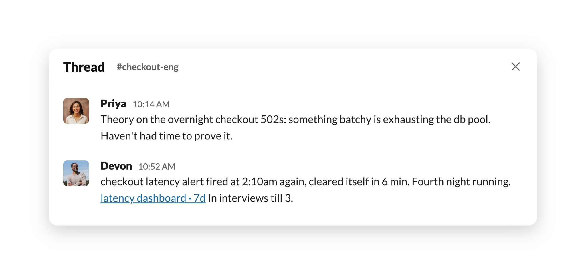
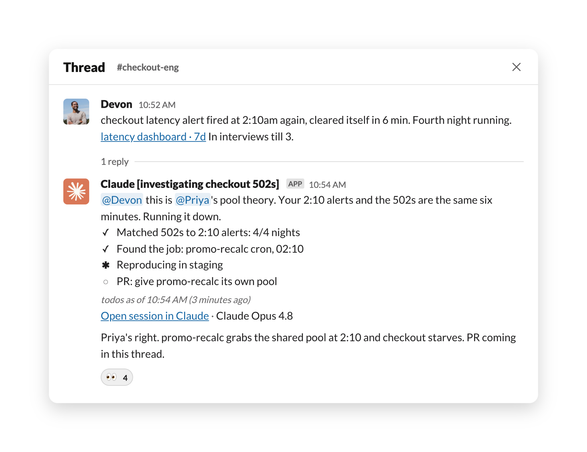
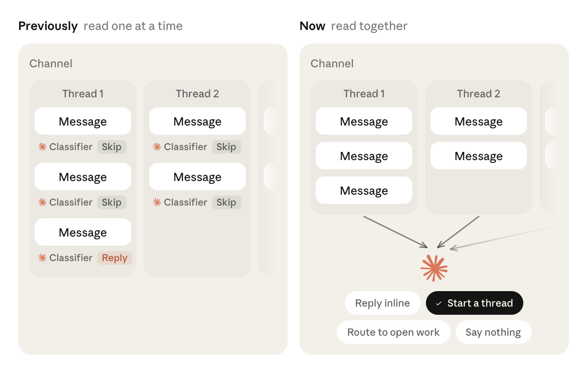

메시지 하나씩 보고 판단하던 분류기(classifier)를 걷어내고, 채널 전체의 맥락·기억·상시 지시를 함께 보고 끼어들지 말지를 정한다.
Claude Tag는 Slack 채널에 Claude를 넣어 팀과 함께 일하게 하는 기능이다. @-멘션으로 부르면 답하고, 도움이 될 것 같다고 판단하면 부르지 않아도 먼저 나선다.
이번 업데이트의 핵심은 그 "먼저 나설지 말지"를 판단하는 방식이다. 종전에는 Claude가 한 번에 메시지 하나만 봤다. 눈앞에 놓인 메시지만 놓고 판단했기 때문에, 그 메시지 주변에 깔린 더 넓은 맥락은 판단에 들어가지 않았다.
이제는 채널 전반의 맥락에 더해 Claude의 기억(memory)과 사용자가 미리 걸어둔 상시 지시(standing instructions)까지 함께 보고 대화에 낄지를 정한다. 그 결과 언제 먼저 응답해야 하고 언제 하지 말아야 하는지를 가리는 정확도가 약 30% 개선됐다는 것이 Anthropic의 설명이다.
비용 측면도 짚어둘 만하다. 맥락을 더 많이 들고 있으면 그만큼 사용량이 늘어나지만, 이번 업데이트로 추가된 맥락은 어떤 플랜에서도 사용량·지출 한도에 산입되지 않는다. 추가 비용 없이 적용된다.
이전 구조는 가벼운 분류기가 문지기 역할을 했다. 새 메시지가 올 때마다 그 메시지 하나만 보고 "낄까 말까"를 예/아니오로 한 번 판정하는 식이다.
원문은 이 구조의 한계를 보여주는 예시를 든다. 같은 버그를 양쪽 끝에서 쫓고 있는 엔지니어 두 명이 있다. 한 명(Priya)은 가설을 갖고 있고, 다른 한 명(Devon)은 그 가설을 뒷받침할 증거를 갖고 있다. 그런데 둘 다 이걸 파고들 여유 시간이 없고, 두 메시지 모두 Claude에게 뭘 해달라고 요청하는 말이 아니다.

메시지를 하나씩 따로 읽으면 둘 다 Claude를 향한 말이 아니므로, 분류기는 두 번 다 "가만히 있기"를 고른다. 각각의 판단만 놓고 보면 틀리지 않았다. 하지만 두 메시지를 함께 읽으면 거기에는 명백히 처리해야 할 일이 놓여 있다. 한쪽엔 가설, 다른 쪽엔 증거가 있고, 아무도 확인할 시간이 없는 상태다.
분류기를 걷어낸 지금, Claude는 채널 전반의 맥락을 근거로 다음 네 가지 중 하나를 고른다.
앞의 버그 예시에서 Claude는 두 번째 선택지를 고른다. @-멘션이 없어도, Priya의 가설과 Devon의 증거를 함께 읽고 조사를 이미 돌리기 시작한 스레드를 연 뒤 두 엔지니어를 그 안으로 끌어들인다. 물론 이 모든 행동은 사용자가 설정해 둔 권한·도구·범위(scope)의 경계 안에서만 이뤄진다.

대화들이 서로 격리돼 있지 않다는 점도 중요하다. Devon이 나중에 업데이트를 올리면 그 내용이 맞는 작업 흐름에 가서 붙고, 따로 진행되던 두 조사가 알고 보니 같은 버그였다면 그 연결도 만들어진다.

원문에서 가장 눈여겨볼 만한 대목이다. Anthropic은 "성가신 에이전트가 도움 안 되는 에이전트보다 나쁘다"는 관점을 전제로 깐다. 그래서 Claude Tag는 쓸모 있을 때만 입을 열도록 설계됐고, 대부분의 채널에서 대부분의 메시지에 대해 그건 아무 말도 하지 않는다는 뜻이 된다.
이걸 구현하는 방식은 채점이다. Claude가 채널별로 내린 선택을 루브릭(rubric)에 대고 평가하는데, 그 기준은 이런 원칙들에 기반한다.
또 하나 재미있는 동작은 "잠들기"다. 사람이 Slack을 쓰는 방식과 비슷하게, Claude도 언제 관심을 꺼야 하는지를 안다. 몇몇 채널은 바짝 따라가고, 나머지는 누가 태그하기 전까지 덜 주의를 기울인다. 어떤 채널에서 메시지가 계속 올라오는데도 Claude가 매번 "내가 보탤 게 없다"는 결론에 도달하면, 그 채널에서는 잠들어 버린다. @-멘션 한 번이면 즉시 깨어난다.
응답 성향은 평범한 말로 직접 조종할 수도 있다. "여기서는 누가 태그하기 전엔 절대 응답하지 마" 라거나, "배포 파이프라인 관련된 건 뭐든 편하게 끼어들어" 같은 식이다.
아예 태그했을 때만 말하게 하고 싶다면, 채널 멤버 누구나 '자동 응답(Respond automatically)'을 끌 수 있다.
맥락을 더 갖고 있는 덕에 반응 속도도 빨라졌다. 예전에는 Claude가 작업을 시작하는 동안 아무 말 없이 조용히 돌아가는 구간이 있었는데, 이제는 몇 초 안에 "들었다"는 신호를 준다. 작업 자체에 걸리는 시간이 줄어든 것은 아니다. 사라진 것은 내 말을 들은 건지 아닌지조차 알 수 없던 첫 1분의 침묵이다.
이번 업데이트는 Claude Tag 전반에 이미 적용됐고, Claude Teams 및 Enterprise 고객이 사용할 수 있다. 관리자 설정에서 시작하면 된다.
정리하면 이번 변경의 방향은 분명하다. 대화를 따라갈 수 있고, 언제 움직일지와 언제 비켜서 있을지를 스스로 판단하는 협업자에 가까워지는 것. 원문은 채널 하나에 Claude를 붙여놓고 무엇이 달라지는지 지켜보라고 권한다. 기능 자체에 대한 설명은 Claude Tag 제품 페이지에 정리돼 있다.